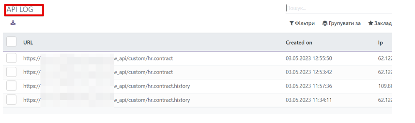

Kitworks API
This module for Odoo is a powerful tool for creating any endpoints to connect Odoo with third-party systems. With this module, you can access any information stored in the Odoo system and create or update data. It can be useful for connecting with websites on different platforms, such as Wordpress, Vue.js and others. The module also helps to connect with information and analytical systems, such as PowerBI or Excel.
You can restrict access to data by using API token or API key, which can be bound to a specific user with the ability to limit the expiration time and IP address from which requests can be made. Thus, the module provides a high level of security and control over data access.
In addition, all API requests are logged and available for viewing in the system. This allows user actions monitoring and analyzing, as well as detecting possible issues in interacting with other systems.
In general, the module provides a convenient and secure way to integrate Odoo with other systems and websites. It allows for easy data retrieval and processing while ensuring a high level of security and control over data access.
We are Ukrainian software developing company working with odoo versions 10 to 16.
We specialize on solutions for Ukrainian market, however often do much more.
Please see all of our Ukrainian modules here
Please see all of our modules here
Would be glad to talk about odoo customization and development for your company or your clients.
Feel free to contact us by:
>Email: info@kitworks.systems
Skype: myshyak_kiev
WhatsApp https://wa.me/380503342348
Telegram: https://t.me/myshyak
We do provide free bugfixes and updates for all our modules during 1 year after purchase.
The warranty is provided on clean odoo instance.
We would not help you (for free) in case our modules do not work on your server or conflict with any other modules.
Also we are ready to consider your feature requests to our modules, and if we would find them useful we can consider including them to new releases.
Also we do provide all types of odoo support services, like installing odoo instance on your server, supporting your odoo server, custom development.
Prepaid support and development packages are available upon request.
Module settings
In order to configure this module in Odoo, select the Add-ons category, click the "Refresh Add-on Lists" button (located on the left in the top line), and enter "API" in the search bar. Install the found modules. This module consists of the Custom API Controller module https://apps.odoo.com/apps/modules/16.0/kw_api_custom_endpoint/ and the Kitworks API module.
The next step is to go to the General Settings and activate developer mode. The API submenu appears on the top panel.
In order to create a new Endpoint, select Custom Endpoint/New.
When you click on "Add a row" on the Fields tab, a new dialog box opens with the ability to select the data you want to receive from the Model you have selected. In this window, you can select Search by clicking on the small triangle icon at the end of the data entry field. You can add as many fields as you need.
To refine the fields (displaying the name, tags), you should use the Data Endpoint.Â
When you save the Custom Endpoint, the module automatically provides you with the API address.
In order to generate a token or key, you need to go to the API token or API keys and click "New". For an API token, fill in the User field and click Save; for API keys, enter the Name and Code in any format and click Save. You can also specify the allowed IP addresses from which requests can be made.
All sent requests are recorded in the LOGs submenu of the API for easy tracking, searching, and detailing of all sent requests.
In the API Settings, you can specify the token prefix, token validity period, and other settings.
For example, let's send one received Endpoint via Postman.